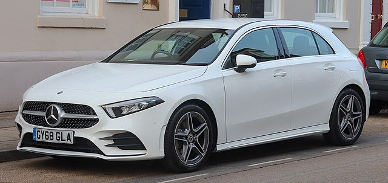
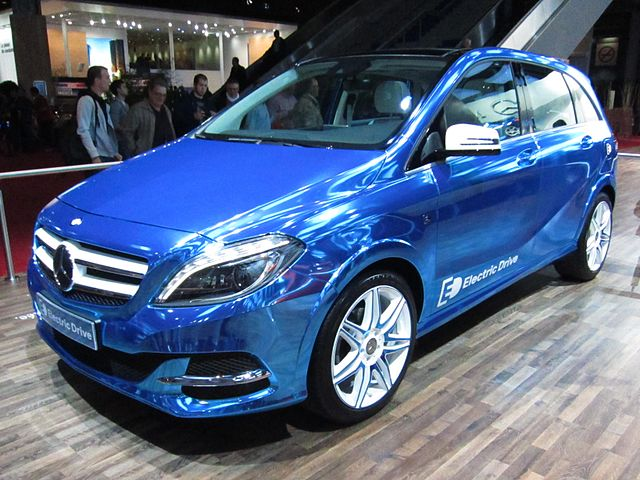
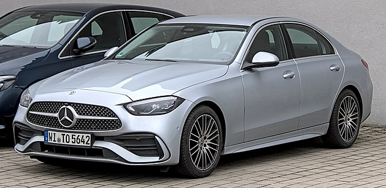
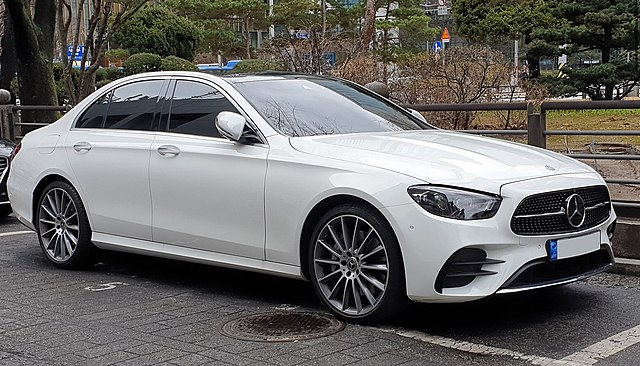

Marcedes benz was founded in 1926 by karl benz.It's subsidary of daimler and the brand is used on luxury cars,buses and trucks.
It's financed by bertha benz's dowry and patented in january 1886.
The marcedes benz brand has arich heritage that spans more than 130 years.carl benz first introduce Motorwagen Car.
The following is a list of vehicles produced by Mercedes-Benz Group (formally Daimler-Benz) and their successors, ordered by year of introduction.
| Name | year | Description | Image |
|---|---|---|---|
| Mercedes-Benz A-Class | 1997 | The Mercedes-Benz A-Class is a compact car produced by the German automobile manufacturer.Mercedes-Benz as the brand's entry-level vehicle.The A-Class is sometimes referred to colloquially as the 'Baby Benz', a term also used for the 1982 Mercedes 190 (W201), Mercedes' first compact executive car model.[3] |  |
| Mercedes-Benz B-Class | 2005 | The Mercedes-Benz B-Class is a subcompact executive car manufactured and marketed by Mercedes-Benz since 2005. Based on the A-Class with larger dimensions, the European New Car Assessment Programme (Euro NCAP) classifies it as a small MPV. As of December 20, 2013, delivery of B-Class vehicles reached 106 since its launch in 2005.[3] |  |
| The Mercedes-Benz C-Class | 1993 | The Mercedes-Benz C-Class is a series of compact executive cars produced by Mercedes-Benz Group AG.Introduced in 1993 as a replacement for the 190 (W201) range. The C-Class was the smallest model in the marque's line-up until the W168 A-Class arrived in 1997.The C-Class has been available with a "4MATIC" four-wheel drive option since 2002. |  |
| The Mercedes-Benz E-Class | 1953 | The Mercedes-Benz E-Class is a range of executive cars manufactured by German automaker. Mercedes-Benz in various engine and body configurations. Produced since 1953. The E-Class falls midrange in the Mercedes line-up, and has been marketed worldwide across five generations. |  |
| The Mercedes-Benz S-Class | 1972 | The Mercedes-Benz S-Class, formerly known as Sonderklasse (German for "special class", abbreviated as "S-Klasse"). Mercedes-Benz models and was officially introduced in 1972 with the W116.It's a series of full-sized luxury sedans, limousines and armored sedans produced by the German automaker. Mercedes-Benz, a division of the German company Mercedes-Benz. | |
Select